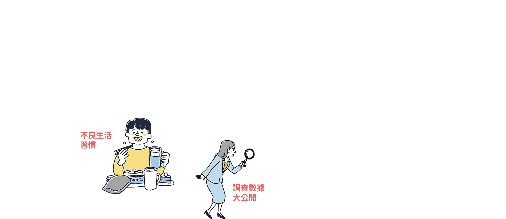
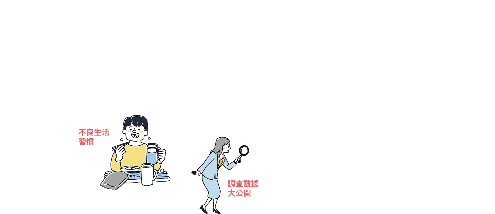

什麼是生活習慣病？

生活習慣病是危害
國人健康的頭號殺手
缺乏運動
不良飲食
作息不佳
過度壓力

高血糖
高血脂
高血壓
BMI異常
肥胖

糖尿病
心血管疾病

心肌梗塞
腦中風

生活不能自理
死亡


 常熬夜
常熬夜 吃宵夜
吃宵夜 不運動
不運動 常久坐
常久坐 少蔬果
少蔬果 少喝水
少喝水 愛甜食
愛甜食 抽煙喝酒
抽煙喝酒這些 行為 你做了幾項？
行為 你做了幾項？


不喜歡運動
沒時間運動
健康問題找 奧思禮

健康疑惑
衛教諮詢
健康協助
自我健康管理促進


守護圈專家教你
戰勝心血管疾病


 保險保障專家教你 提供保險規劃建議
保險保障專家教你 提供保險規劃建議
保夠再保本
「足額」保障的重要性
挑選保險時不要陷入「還本」或「終身」保障等迷思。建議可先以定期險規劃所需保障。
保近再保遠
現階段可能發生的風險做保險規劃
先著眼於人生現階段、或近年可能發生的風險損失做保險規劃，再進一步思考未來退休、長照等較長遠的需求。
保大再保小
先保障家中主要經濟支柱
建構家中主要經濟支柱足夠的保障，避免因意外或疾病對既有生活造成衝擊、甚至造成其他家人的負擔。
商品介紹
「南山人壽心心相惜生活習慣健康保險」保障範圍涵蓋由不良習慣引發的心血管疾病，針對不同輕度／重度特定疾病提供一次性給付，並就特定手術、處置及醫材有相應補助。
商品特色

強心
強化不良生活習慣造成之心血管疾病
貼心
針對重度/輕度生活習慣病提供一次性給付，靈活因應治療
全心
除提供心血管疾病保障一次給付，另有心血管疾病手術暨特定處置及醫材輔助
安心
提供豁免保費機制，保障安心不中斷
 注意事項
注意事項
- 專案內容、詳細規定依各特約營運業者為準，活動內容如有任何異動不另行個別通知；本公司享有對本活動解釋、取消、終止、更改或暫停之權利。
- 健康守護圈之加值服務或合作廠商提供之產品、服務或優惠訊息等，均非屬保險契約權利義務之一部分。本公司與合作廠商間無代理或類似關係，合作廠商提供之產品、服務或優惠訊息，係由合作廠商各自提供及負責。
- 參加本專案者，必須遵守本專案注意事項及其他有關之規定，如有違反，立即自動喪失本專案資格。
- 參加本專案者保證所有填寫或提出之資料均為真實且正確，並未有冒用或盜用任何第三人之資料，如有不實或不正確之情事時，將自動喪失本專案資格，南山人壽不負任何責任，且如因此致生損害於南山人壽或任何第三人時，參加本專案者應負一切相關責任。
- 為保護您的權益，請詳閱南山人壽個人資料保護聲明。
- 如有因不可歸責於南山人壽之事由，致參加本專案者所登錄之資料有延遲、遺失、錯誤、無法辨識或毀損之情況時，南山人壽不負任何法律或賠償責任，參加者亦不得因此異議。